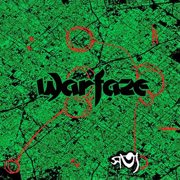

Warfaze is a Bangladeshi heavy metal band formed on 6 June 1984 in Dhaka by Ibrahim Ahmed Kamal, Meer, Helal, Naimul, and Bapi. They are one of the earliest heavy metal bands in Bangladesh. The band had numerous line-up changes since 1984 and since its inception, the band has released seven studio albums, one compilation album, and several singles. They have experimented with numerous sub-genres of rock and heavy metal over the years.... Read More
দুঃস্বপ্নের শেষ সীমানায় চমকে ঘুম ভেঙে যায় জেগে দেখি তুমি পাশে নাই চোখ পড়ে খোলা জানালায় জোছনায় আলো নেই আর হতাশার কালো আঁধার নির্বাক রয় ধরণী দুঃখ যেন আমারই এক ঝিমধরা দিবা স্বপনে আনাগোনা সন্দেহে আমি একা মেতে উঠি পুণ্যে বিকশিত পাপের খেলায় কারাগারের অবহেলায় পচন ধরে মনে, শরীরে কবে আসবে ফিরে ভালোবাসা কবে আসবে ফিরে ভালোবাসা জীবনের সব আশায় হতাশার আলিঙ্গনে ঘুণ ধরা স্বপ্নগুলো সব যেন এলোমেলো স্মৃতি নিয়ে আমি একা ভাসমান এই জীবন তাই বুঝি বেঁচে থাকা জানি না শেষ কোথায় এক গোলক ধাঁধায় আটকে পড়া অবনত হৃদয়ে দিশেহারা ছুটি আমি রাতের আলোকিত নগর-প্রণয় ভালোবাসার প্রতারণায় পচন ধরা বিশ্বাসে, আশায় কবে আসবে ফিরে ভালোবাসা কবে আসবে ফিরে ভালোবাসা Year of Release: 2012